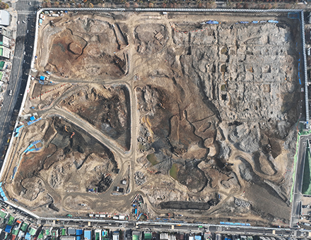
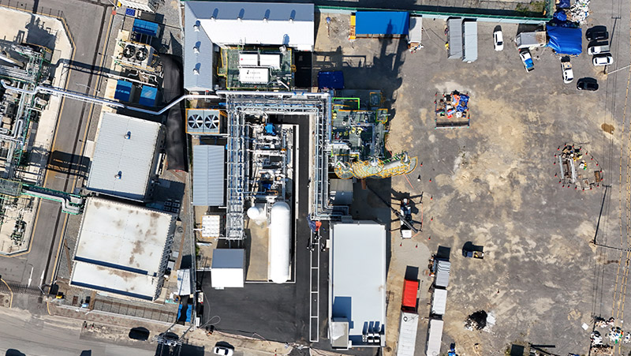

토양환경·자원순환토양·지하수 정화 / 퇴적토 정화 / 방사능 오염 방제
반입정화센터와 환경분석·컨설팅을 기반으로
오염된 토양과 수환경의 복원을 지원합니다.
사업영역

반입정화센터와 환경분석·컨설팅을 기반으로
오염된 토양과 수환경의 복원을 지원합니다.

평택 CCU와 액화탄산·드라이아이스 사업을 통해
포집한 CO₂의 산업적 활용을 추진합니다.
연구개발 안정화제, 정화기술, 탄소흡수제와 CO₂ 전환 연구
사업 분야 토양·지하수 정화 설계·시공 · 오염토양·지하수 컨설팅 · 토양환경평가 · 퇴적물(하천·댐·호소) 정화 · 종합폐기물처리(무기성오니 재활용) · 토목·종합건설 · 방사능 오염 방제 · CCUS·탄소배출권 — 회사소개서 2024